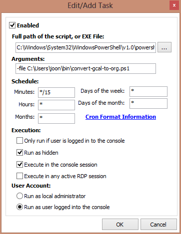

org-mode Google calendar sync in Windows
Table of Contents
The instructions at Org-mode does not cover the Windows case. I explain how you can get the sync between Google calendar and org-mode in Windows.
1 Dependencies
1.1 ical2org.py
Get the ical2org.py script from https://github.com/asoroa/ical2org.py. You
have to have Python installed, and also need to install icalendar and pytz:
> pip install icalendar
> pip install pytz
1.2 Find your private URL for your calendar
Follow step 2 in this instruction to get the private URL for your calendar.
2 PowerShell script
First check if you can download your calendar with Invoke-WebRequest:
> Invoke-WebRequest -URI <url to your private Google calendar>
If it works, make a PowerShell script file, convert-gcal-to-org.ps1:
# customize these
$ICS2ORG = "<path to ical2org.py>"
$ICSFILE = "<path for icsfile>"
$ORGFILE = "<path to orgfile>"
$URL = "<url to your private Google calendar>"
# no customization needed below
$Content = (Invoke-WebRequest -URI $URL).Content
[System.IO.File]::WriteAllLines($ICSFILE, $Content)
python $ICS2ORG $ICSFILE $ORGFILE
for example:
# customize these
$ICS2ORG = "~/bin/ical2org.py"
$ICSFILE = "~/bin/gcal-shared.ical"
$ORGFILE = "~/gcal.org"
$URL = "https://www.google.com/calendar/ical/...../basic.ics"
# no customization needed below
$Content = (Invoke-WebRequest -URI $URL).Content
[System.IO.File]::WriteAllLines($ICSFILE, $Content)
python $ICS2ORG $ICSFILE $ORGFILE
Now try the script and see if it works:
> convert-gcal-to-org.ps1
If you have the output org file in your org-agenda-files list, you will
see the entries from Google calendar when you update your agenda in Emacs.
3 Install cron
You can install IntelliAdmin Cron to periodically run the script and sync your
calendars with org-mode. Here is a blog post about this specific cron utility.
Then, use the following to set up the cronjob, with appropriate schedule settings:
- EXE File
C:\Windows\System32\WindowsPowerShell\v1.0\powershell.exe- Arguments
-file C:\PATH\TO\convert-gcal-to-org.ps1
For example:

Comments
Comments powered by Disqus